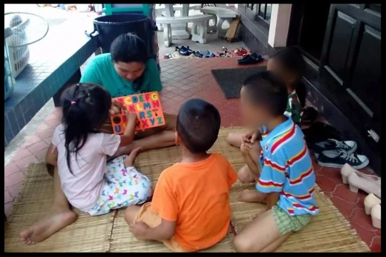

English Program
A weekly English class for children from about five to twelve, plus a separate class for teens and adults. Interactive and deliberately fun, because a child who dreads the room does not come back.
A ministry of YWAM Chiang Mai
House Full of Love. A community centre in Santitham, Chiang Mai, working with migrant families whose children have the least access to opportunity in this city.

The need
Baan Dem Rak serves the neighbourhood of Santitham in Chiang Mai. Many of the migrant families living here have limited access to opportunity, and their children are exposed to risks that better connected families can protect against.
Poverty is rarely a shortage of ability. It is a shortage of doors. A child who cannot get help with homework falls behind, and a teenager who falls behind stops believing there is a version of their life worth planning for. That is the gap this centre exists to close.
The solution
Baan Dem Rak exists to broaden the opportunities for the people in its neighbourhood, to help them find God's purpose for their lives, and then to help them source the skills and education needed to fulfil it. The centre works across four areas: education, employment, spiritual growth and community building.
The employment strand matters more than it sounds. Harnessing business to create real jobs is what lets a young person break the poverty cycle rather than simply be supported through it, and it builds mentoring relationships that outlast any single programme.


A week here
The centre does not run campaigns. It runs a rhythm, and the rhythm is the point: the same faces, in the same room, at the same time each week, for long enough that trust becomes possible.
A weekly English class for children from about five to twelve, plus a separate class for teens and adults. Interactive and deliberately fun, because a child who dreads the room does not come back.
Children bring the school work they are stuck on and get help from staff. Guitar, worship songs and a Bible study run alongside for anyone interested.
Gathering the kids and teens who want to improve, and using the time to build relationships that carry over into everything else.
A weekly slot with nothing scheduled. Sport, art, or just somewhere to be. Unstructured time in a safe place is its own kind of provision.
Weekly, for teenagers who want to go further: studying the Word together and worshipping.
Basic and advanced digital classes for children and youth, run in partnership with Banah Digital. The skills here translate directly into work.
The whole community is invited. A story from the Bible, then age groups to talk it through, then dinner together. The meal is not an add-on.
What we are aiming for
The centre's stated vision is to see communities fulfilling God's purpose for their lives: aware, restored, empowered and free. Its mission is simpler still, to be a safe place for everyone to experience the love of Jesus.
What that looks like on the ground is a strong, positive identity in each person the centre serves. Not rescue, and not charity in the transactional sense, but the expectation that these are people with a purpose who have been short of the means to pursue it. The centre anticipates community transformation and a disciple making movement, one family at a time.
Who runs it
The team is international and interdenominational, a group of Thais and foreigners committed to knowing God and making Him known through their lives and their service. Baan Dem Rak is a registered YWAM Chiang Mai project under the Ignite Dreams Foundation, Thailand.
Commitments are deliberately long. Thai staff join for a minimum of two years and non Thai staff for a minimum of three, unless they already speak Thai, so there is time to learn the language and the culture before being useful. Volunteers can give fewer hours per week but are asked for at least a year. In a neighbourhood where adults have often come and gone, staying is most of the work.
Get involved
These are the roles Baan Dem Rak names itself. If your skill is not on the list and you think it fits, they would rather hear the idea than not.
People with real experience in developing a community, not just running activities within one.
With a heart to serve both the children and the adults who come. Two very different classrooms, both needed.
Able to work with older children and teens, and to develop the soccer programme or whatever else the community shows an appetite for.
The centre wants to see the neighbourhood filled with home churches, and is looking for people willing to take the initiative and befriend people as part of their working day.
Friendly people who love Jesus and want to help develop the centre itself further. Less a job description than an invitation.
Contact
Tell them your ideas or ask your questions. Email Baan Dem Rak, or call +66 65 608 7913.
Santitham, Chiang Mai. A registered YWAM Chiang Mai project under the Ignite Dreams Foundation, Thailand.
Follow along
Get social
Baan Dem Rak runs its own site and newsletter at baandemrak.com, and posts regularly on Facebook. Its digital skills partner is Banah Digital.